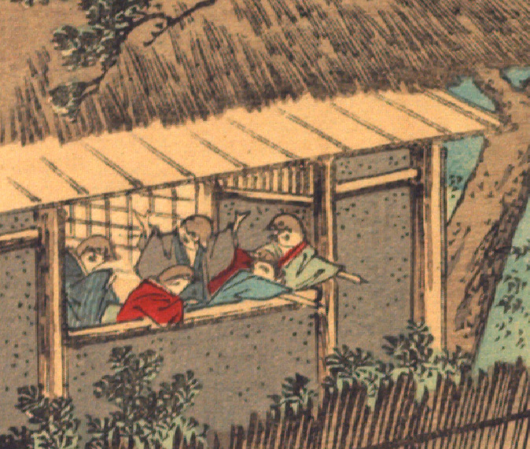

雀たち。5体の雀が着物を着ている。袖から出ている腕は人間のものである。中央の一番背が高い雀は両腕をあげ、窓際に乗り出した小さめの3体の雀は片腕で外を指し示し、喜び合っているように見える。
出典：親書誌：U426_nichibunken_0109：Le moineau qui a la langue coupée／日付：2006／資源識別子：U426_nichibunken_0109_0007_0000
Copyright (c)2010- International Research Center for Japanese Studies, Kyoto, Japan. All rights reserved.